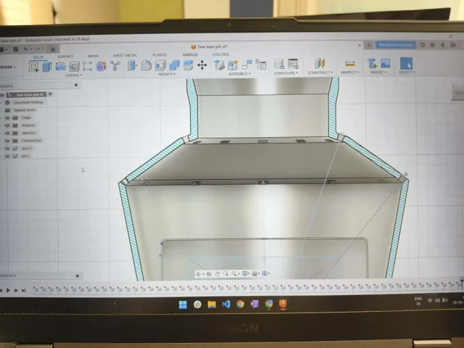
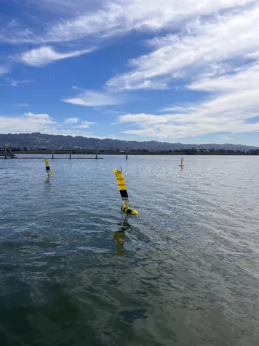
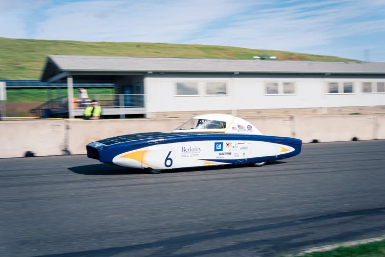
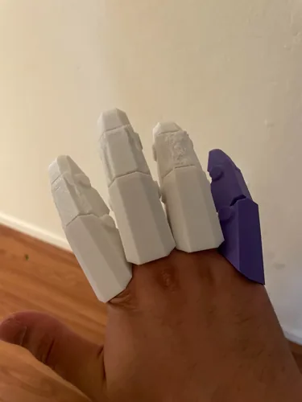

Undergraduate thesis · Optimization
DeepHybrid
A graph neural network guides ant colony optimization to build shorter job-shop schedules.
22–28% shorter makespans than classical ACO across six benchmarks.
Master’s student in robotics at the University of Michigan
Undergraduate thesis · Optimization
A graph neural network guides ant colony optimization to build shorter job-shop schedules.
22–28% shorter makespans than classical ACO across six benchmarks.
In progress · Multi-robot perception
I’m building a shared scene graph so multiple robots can use what the team has seen while navigating an area.
Inspired by DOV-SG, the perception pipeline labels and segments objects in RGB frames and models relationships between them in a shared map.

Compact imaging systems for detecting surface defects at IndicVision.

STM32 firmware and system bring-up for TAFLab’s sail-powered prototypes.

Real-time telemetry and radio networking for UC Berkeley’s solar racing team.

A real-time rhythm game built in C with FreeRTOS.
Course projects in classification, regression, and reinforcement learning.
M.S. Robotics, University of Michigan
B.Tech. Mechanical Engineering, Shiv Nadar University